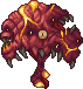

The Introduction
Pre-Hardmode
Hardmode
Post-Moonlord
About Me
Pre-Hardmode
Ahh, Pre-Hardmode. Where every journey starts. You probably know what to do already if you've played vanilla Terraria, but this time you can be lazier and install mods! Well, open up your starter bag and get ready for a Calamitas ride. (Yes, that joke was intentional.) Oh, and one more thing before I forget. If you are playing on Expert or Master mode, you can toggle Revengeance or Death mode in your menu. It looks like the image on the right. Revengeance Mode adds two new features; Rage and Adrenaline. Rage builds up whenever you are in combat, and once full, you can press V for a 1.35x damage boost. Adrenaline, on the other hand, is a high risk high reward. If you take no damage for a period of time while engaged in a boss fight, you can activate Adrenaline by pressing B for a 2.5x damage boost. Death Mode just makes everything harder. Pretty simple.
Starting off, remember life crystals and basic accessories such as the Hermes Boots. What I like to do is to rush a Reaver Shark from fishing (Calamity restores it to its GLORIOUS 100% pickaxe power, strong enough to mine hellstone). Then, rush Molten Armor. It's nice to have Molten Armor before any bosses, no? Well, before any bosses, you can get the Bladecrest Oathsword and Old Lord Claymore too. They'll carry you through Pre-Hardmode. Well, enough yap. Let's get to the juicy stuff. Desert Scourge, the first Calamity added boss. Sand worm, easy to beat. Next, Crabulon. Hands down has one of the best themes in the game. Don't believe me? See for yourself.
Now that we got the easy ones out of the way, off to the next milestone for you, which would be the Calamity Evil Boss, depending on your evil biome. Either the Perforators or the Hive Mind, Perforators for Crimson and The Hive Mind for Corruption.

Usually you'd probably use the same loadout as before, but you absolutely need the Shield of Cthulhu from the Eye of Cthulhu. I can't stress how necessary dash accessories are, they will literally save your life on multiple occasions. (Don't forget to upgrade your Hermes Boots to Terraspark or Frostspark Boots! Lightning works too.) Arenas are basically necessary past this point, as everything gets harder. A lot harder.
After killing your evil boss, Aerialite becomes mineable.  Skeletron and Queen Bee should not be a problem for you, and then comes the Slime God. Hoo, this one is a doozy. So, see those two slimes at the right? Those are the Slime God's Paladins. The Slime God itself, is this... core... thing... on the left. These are likely the first real boss you'll fight. You'll probably die a few times, and this is normal! Calamity is a hard mod, after all. The core can "possess" one of the Paladins, buffing their stats as well as making them more aggressive temporarily. Watch out for that. It'll turn the respective paladin... piss colour, for lack of better words. You only need to kill the paladins, since the core doesn't take any damage and doesn't have an HP bar of its own. As for your loadout, I'd recommend using accessories like the Shield of Cthulhu and Bloody Worm Tooth for offense, Bundle of Horseshoe Balloons, Skyline Wings and the Terraspark Boots for mobility. Weapons can include the Wind Blade, Bladecrest Oathsword, and the Old Lord Claymore due to their impressive DPS for their progression point, as well as the latter two having homing.
After Slime God, you unlock Purified Gel, and with a Static Refiner, craft yourself some Statigel Armour and a Gelitic Blade. And finally, just kill Wall of Flesh the traditional way in vanilla, and you're done with Pre-Hardmode!
Well, Hardmode is up next. Good luck~
Skeletron and Queen Bee should not be a problem for you, and then comes the Slime God. Hoo, this one is a doozy. So, see those two slimes at the right? Those are the Slime God's Paladins. The Slime God itself, is this... core... thing... on the left. These are likely the first real boss you'll fight. You'll probably die a few times, and this is normal! Calamity is a hard mod, after all. The core can "possess" one of the Paladins, buffing their stats as well as making them more aggressive temporarily. Watch out for that. It'll turn the respective paladin... piss colour, for lack of better words. You only need to kill the paladins, since the core doesn't take any damage and doesn't have an HP bar of its own. As for your loadout, I'd recommend using accessories like the Shield of Cthulhu and Bloody Worm Tooth for offense, Bundle of Horseshoe Balloons, Skyline Wings and the Terraspark Boots for mobility. Weapons can include the Wind Blade, Bladecrest Oathsword, and the Old Lord Claymore due to their impressive DPS for their progression point, as well as the latter two having homing.
After Slime God, you unlock Purified Gel, and with a Static Refiner, craft yourself some Statigel Armour and a Gelitic Blade. And finally, just kill Wall of Flesh the traditional way in vanilla, and you're done with Pre-Hardmode!
Well, Hardmode is up next. Good luck~
Move to Hardmode, if you dare.